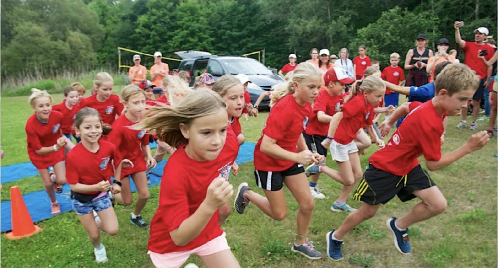

Date: Saturday, July 20, 2024
Time: 9:30am Stoney Squirts 1K
- 10:00 am 5K Run & Walk
Registration gets going on the fields at Viamede Resort at 8:30am.
Well, apart from being a super fun morning of fitness and friendship with a great community, we also do really good work! In cooperation with Kawartha Land Trust and the Environment Council, the Sprint is continuing its tradition of championing the efforts of The Stony Lake Heritage Foundation for 2024. All money raised will be directed to the work it does to protect the historic and environmental character of Ston(e)y Lake. So many good reasons to run or walk!
DonateThat’s the easy part! Just hit the register button and you’ll be directed to our Race Roster website. Stoney Squirts 1K is $35, and the 5K Run & Walk is $60. Consider supporting The Stony Lake Heritage Foundation a little bit extra by becoming a Family Sponsor for $500. You’ll get up to five race registrations and your family name printed on the race t-shirts.
The limited edition 2024 SLS t-shirt is included in your registration fee.
Now that’s a simple answer: YES! We couldn’t possibly put on this wonderful community event without a posse of dedicated helpers. To volunteer, contact Shelagh Durno at shelaghdurno@gmail.com and she’ll sort you out for race day. It’s possible to volunteer and still participate in the run, so just let her know what you’d like.
Huge kudos to our Sprint sponsors for making it possible to put on the race and throw our support behind The Stony Lake Heritage Foundation.
- List of sponsers
595 Mt Julian Viamede Rd, Woodview, ON K0L 3E0
Boat docking is limited! Consider boat pooling with your friends and neighbours. You can tie up at the public dock at the bottom of Mount Julian Viamede Road, right next to Viamede Resort.
If you’re coming by car, public parking is also available at the bottom of Mount Juilian Viamede Road.